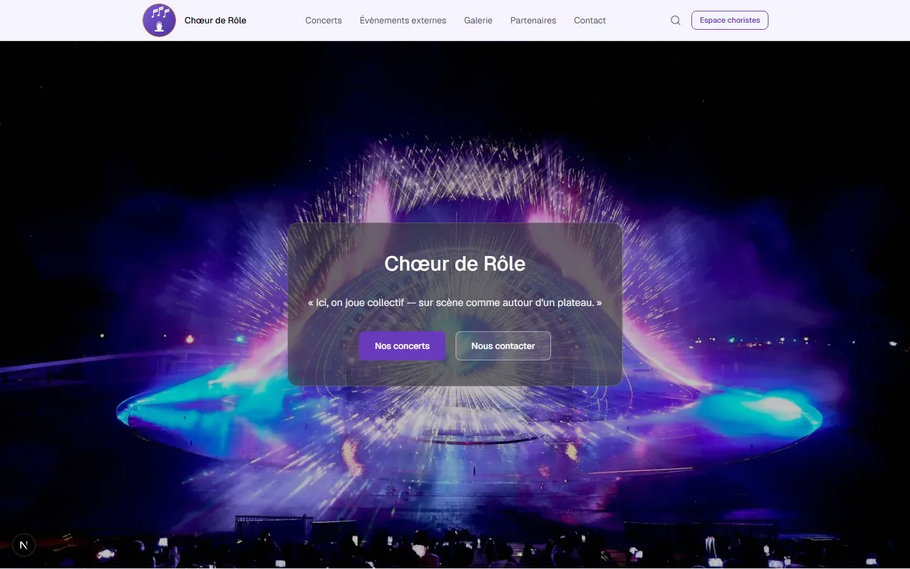
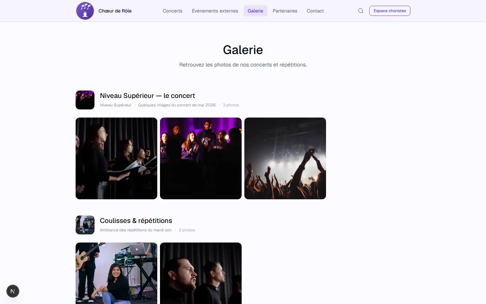
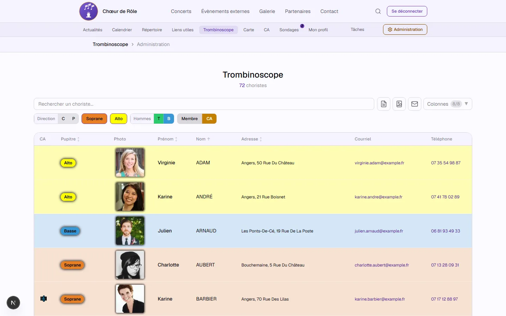
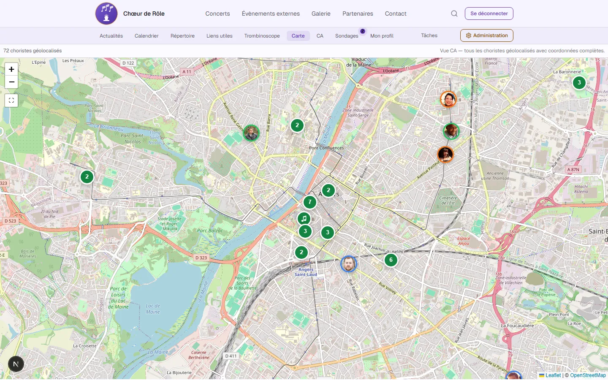

Site vitrine & espace membres d'une chorale — projet de démonstration
Next.js · TypeScript · Supabase · Tailwind CSS
← → pour naviguer · S pour les notes · F plein écran
Une chorale fictive à Angers mêlant chant choral et jeux de société. Toutes les données (choristes, concerts, actualités…) sont inventées — mais l'application est complète et fonctionnelle de bout en bout.
Front
Back & infra
LeafletTiptapjsPDF JSZipRechartsdnd-kit YouTube Data APIMDX
Navigateur ──► Next.js (App Router, RSC + Server Actions)
│
├─► Supabase Auth (+ 2FA TOTP) · Postgres · RLS · Storage
├─► Cloudflare R2 partitions, pistes audio, images
├─► Resend formulaire de contact
└─► YouTube Data API playlist vidéos synchronisée
supabase/migrations/ (~75 migrations)
Page d'accueil entièrement éditable par blocs de contenu depuis l'admin (héro, histoire, raison d'être, direction artistique, pianiste).

Albums photos avec lightbox · playlist vidéo tirée de l'API YouTube.
Accès réservé aux membres connectés — authentification Supabase, double facteur (TOTP).

Filtrable par pupitre · export · respect de la visibilité choisie par chaque choriste (email / téléphone / adresse).

Choristes géolocalisés (Leaflet + clustering), adresses géocodées.
Pour les membres élus du conseil d'administration.
Un back-office pour gérer l'intégralité du contenu :
MembresSaisons & pupitres ConcertsGalerie PartenairesCalendrier SondagesRépertoire ActualitésPage d'accueil Messages de contactJournal d'audit
git clone https://github.com/forthtilliath/choeur-de-role.git
cd choeur-de-role
npm install
cp .env.local.example .env.local
npm run dev:e2e # Supabase local (Docker) + serveur Next.js
# → http://localhost:3000
Données de démo incluses dans les migrations. Détails complets : SETUP.md.
Chœur de Rôle
Démo en ligne : <url à compléter>
Code : github.com/forthtilliath/choeur-de-role